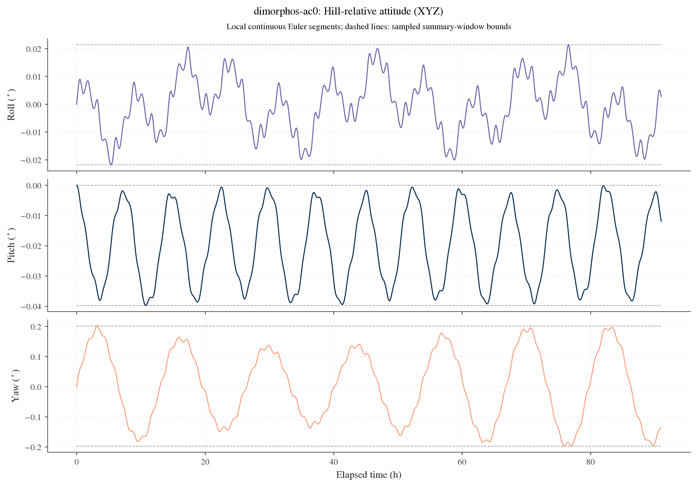
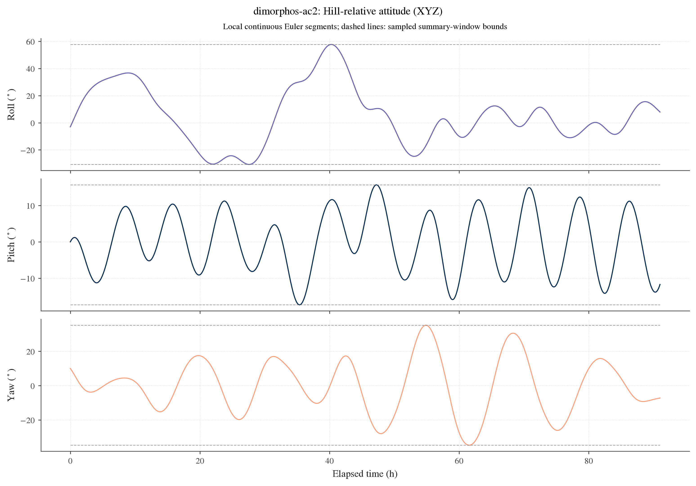
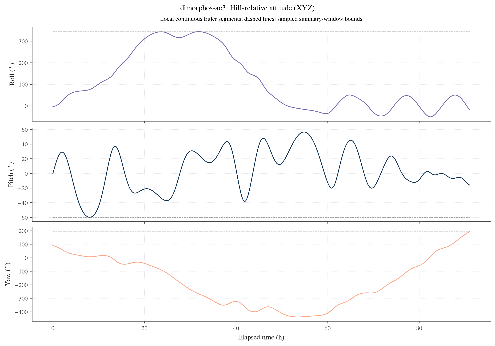
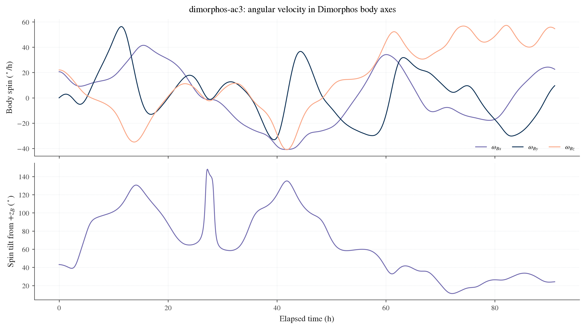
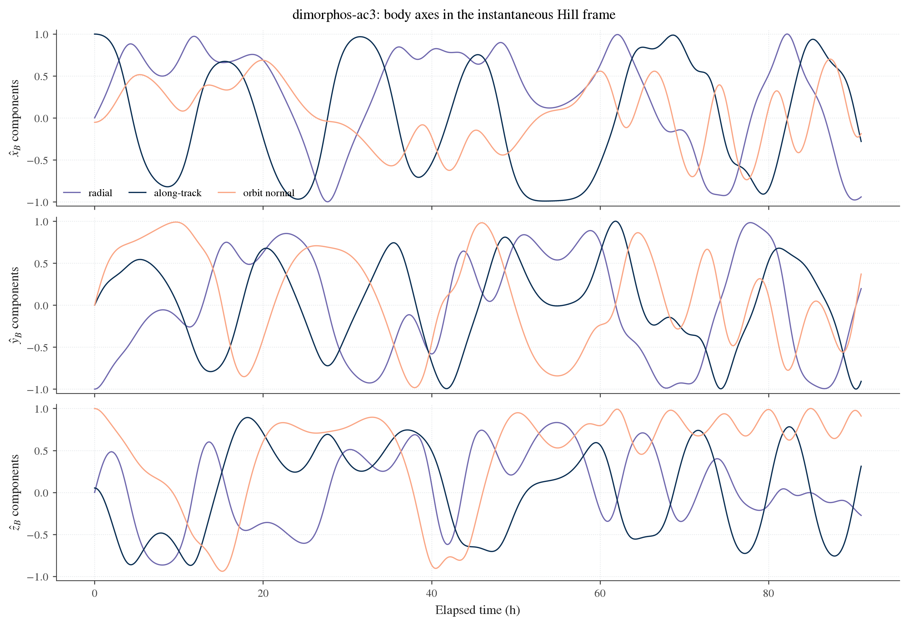

Dimorphos tumbling playground
Use this separate playground to try initial conditions and inspect Dimorphos' nominal attitude over time. It runs the same coupled Hou binary dynamics without computing covariance, observations, priors or state-transition matrices. Your covariance scripts and the paper presets remain unchanged.
Run a nominal experiment
From the BASCO repository root:
python playgrounds/dimorphos_tumbling/run.py --open
The script reads config.json, initially preserves paper AC2, propagates eight requested orbits, saves an independent experiment under results/tumbling/ and opens the local report. The report is a standalone HTML file with a saved-sample time slider, orientation display and angle traces. Changing playback time does not recompute physics. Edit the settings or command and run again for a new scenario.
For a short custom trial:
python playgrounds/dimorphos_tumbling/run.py \
--case AC2 --orbits 4 --roll 0 --pitch 5 --yaw 20 \
--spin-period-hours 12 --spin-tilt-deg 30 --open
--open is optional. It opens a completed local report, not a server. Use --help for the available overrides. Installation explains the environment.
Example runs
These three saved nominal experiments use the original paper bodies and cases, Hou order 6 and a 75 s step. Each requested eight reference orbits; the explicit cadence rounding gives 91 h and 1,093 saved samples. The plots use physical degrees and the same Hill/XYZ convention.
| Case | Roll sampled half-range | Pitch sampled half-range | Yaw sampled half-range |
|---|---|---|---|
| AC0 equilibrium reference | 0.0216 degrees | 0.0199 degrees | 0.1995 degrees |
| AC2 limited-tumbling initial state | 44.23 degrees | 16.50 degrees | 34.96 degrees |
| AC3 full-tumbling initial state | 197.59 degrees | 58.14 degrees | 315.26 degrees |
AC3 spans full turns in roll and yaw. Its half-ranges describe the sampled excursion; they are not periodic oscillation amplitudes.
Equilibrium reference

Open the AC0 orientation viewer.
Limited-tumbling initial state

Open the AC2 orientation viewer.
Full-tumbling initial state

Open the AC3 orientation viewer.


The AC2 75/37.5 s refinement comparison gives a maximum orientation difference of 0.02452 degrees over the full 91 h and 0.0002712 degrees within the first reference orbit. This is a numerical check for that declared example, not an accuracy claim for every custom long-term tumble. Implementation and numerical evidence records the checks.
Set attitude and angular velocity
| Setting | Meaning |
|---|---|
base_case / --case |
AC0-AC3 supplies the starting bodies and complete initial orbit/state |
initial_attitude_deg |
[roll, pitch, yaw] relative to the instantaneous Hill frame; null preserves the preset |
--roll, --pitch, --yaw |
Override individual initial angles in degrees |
spin_period_hours |
Positive initial spin period; null preserves the preset magnitude |
spin_tilt_deg |
Initial angular-velocity direction from Dimorphos' positive body z axis |
spin_azimuth_deg |
Spin direction azimuth in the Dimorphos body x-y plane |
spin_body_deg_s |
Alternative explicit body-frame angular-velocity vector; do not combine with period/tilt/azimuth |
duration_orbits, dt_s, cadence_s |
Requested horizon, RK4 integration step and saved output interval |
primary_mass_kg, secondary_mass_kg, secondary_semi_axes_m |
Optional mass/shape overrides; null retains the reference |
Null spin controls preserve the case's exact stored spin arithmetic. An orientation override changes the body's direction, while a spin override changes angular velocity. These are independent physical choices. A spin tilt does not impose a constant future wobble amplitude; that behavior follows from the coupled dynamics and inertia.
The nominal model retains the starting orbit when masses or shapes change. It does not solve a new orbit period or refit an initial velocity. For complete system changes, use the custom covariance model example.
Roll, pitch and yaw conventions
The displayed axes are the instantaneous physical Hill/RTN frame: x points from Didymos to Dimorphos, z follows the inertial relative orbital angular momentum, and y completes the right-handed frame. They do not rotate with Didymos' rapid body spin. With C_NH mapping Hill to inertial axes and C_NB = C_NA C_AB,
C_{HB}=C_{NH}^T C_{NB}.
Default sequence="XYZ" is intrinsic 1-2-3:
C_{HB}=R_x(\phi)R_y(\theta)R_z(\psi),
where phi, theta, psi mean roll, pitch and yaw. Optional sequence="ZYX" uses C_HB = Rz(yaw) Ry(pitch) Rx(roll). Both return columns in roll/pitch/yaw order. Match the frame, axis signs, Euler sequence and time interval before comparing amplitudes with a meeting figure. The SciPy rotation convention distinguishes intrinsic uppercase sequences and documents their singularities (checked 2026-11-06).
The orientation display uses an ellipsoid with the declared nominal secondary semiaxes. It illustrates the saved orientation and shape proportions, not surface reconstruction or particle motion.
Read amplitudes and tumbling diagnostics
The report gives three complementary views:
- Euler history: locally unwrapped roll/yaw, principal pitch and explicit chart gaps.
- Body spin: angular-velocity components in Dimorphos axes and tilt from positive body z.
- Body directions: direction cosines of the three Dimorphos axes in the Hill frame. These remain interpretable at Euler singularities.
The summary records sampled minima, maxima and half-ranges within summary_start_hours to summary_stop_hours. The half-range is (maximum - minimum)/2 on one continuous nonsingular chart segment. It is a sampled excursion, not automatically a periodic libration amplitude. Spans of a full turn are flagged separately. No automatic dynamical classification or frequency fit is inferred from those flags.
Near pitch of plus or minus 90 degrees, individual Euler angles are not uniquely defined. The playground masks samples with abs(cos(pitch)) <= gimbal_tolerance_abs_cos_pitch (default 0.001); this is an explicit plotting-chart condition. The numerical report masks those samples and splits local unwrapping at singular or unresolved chart changes. It never bridges such a gap to invent one amplitude. Inspect body directions and spin as well as Euler angles. Saved cadence cannot reveal an unseen full turn between samples; increase output resolution when motion is fast.
Files, refinement and reuse
Every complete experiment has its own descriptive timestamped folder with index.html, exact config.json, physical initial-state.json, summary.json, history.csv, amplitudes.csv, three PNG/SVG/PDF figure families, checksum-verified numeric/ arrays and a final manifest. Original GUBAS state samples remain the scientific record. Any closest-rotation projection used to calculate plotting angles is explicitly diagnosed and never overwrites those samples.
The effective horizon rounds the request up to the next output cadence; requested and propagated values are both recorded. Cadence must be an integer multiple of the RK4 step. For a refinement check, repeat the same trial with --dt 37.5 while retaining the cadence and compare rotation/spin and sampled ranges. Long chaotic histories may diverge; short-time numerical agreement is not proof of a long-term phase prediction.
The runner uses propagate_nominal and attitude_history. Plotting and the saved-sample viewer are independent of propagation. Once you choose a scenario, reuse its full initial state and the same bodies/gravity in make_analysis through model=. This playground does not change the original paper inputs.
The current model is rigid, conservative full-two-body gravity, with no impacts, shape changes, external torques or damping. It is a way to explore candidate initial conditions, not an inference of the present spin state from the meeting observations.